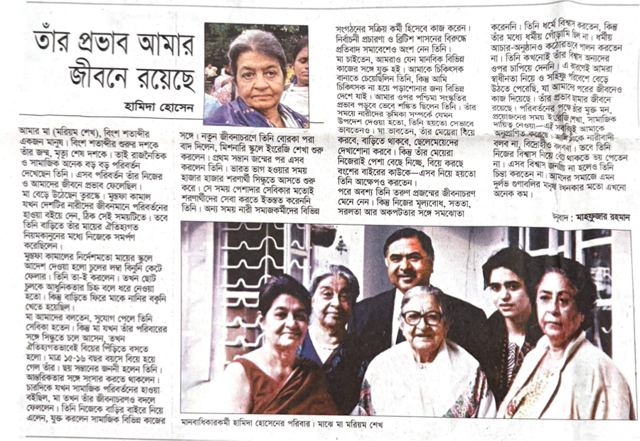
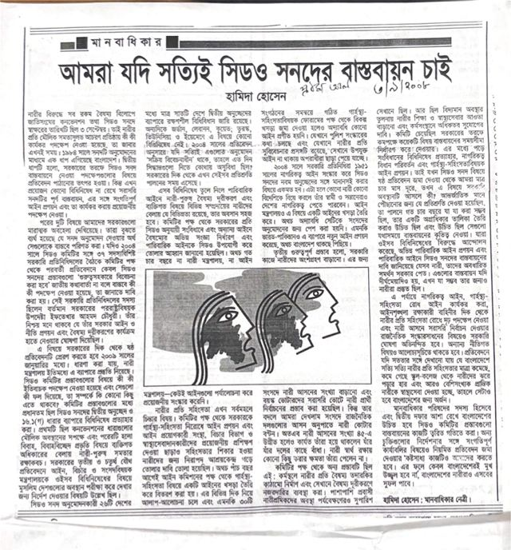
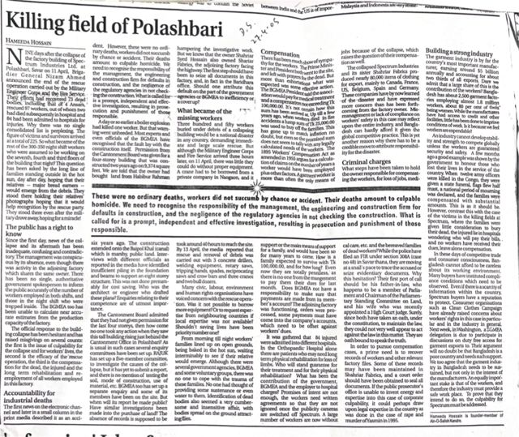
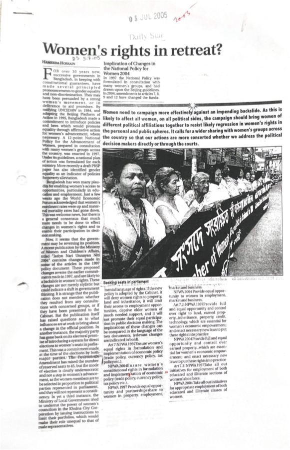
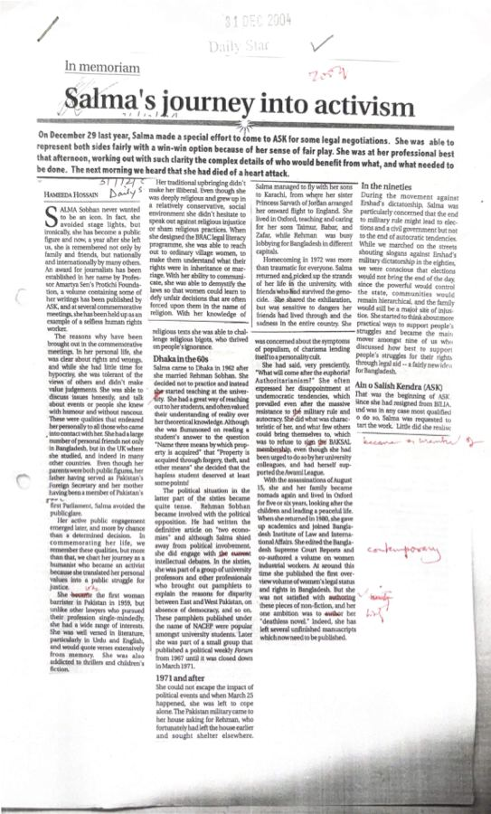
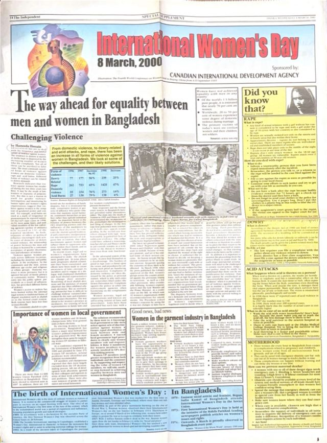
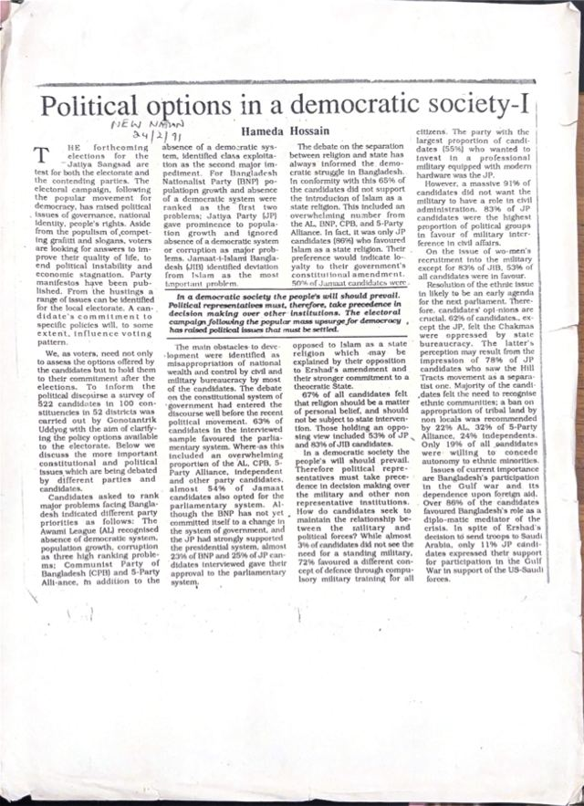

Newspaper articles
Her columns and op-eds as they appeared in print, in The Daily Star, Prothom Alo, New Age and other papers. Each opens as a scanned PDF.
-
 নারীর জন্য প্রত্যাশা (Hopes for Women)
Part of a New Year feature in which four contributors set out hopes for women in 2016. Her piece looks back over 40 years of change, low wages for women workers, unrecognised domestic work, the child marriage age debate and continuing sexual violence.
নারীর জন্য প্রত্যাশা (Hopes for Women)
Part of a New Year feature in which four contributors set out hopes for women in 2016. Her piece looks back over 40 years of change, low wages for women workers, unrecognised domestic work, the child marriage age debate and continuing sexual violence.
-

তাঁর প্রভাব আমার জীবনে রয়েছে (Her Influence Remains in My Life) Hameeda Hossain writes about her mother, Mariam Sheikh, who grew up in Turkey during Mustafa Kemal's reforms, married young in Sindh, nursed refugees at Partition and later took up social work, and whose open mind shaped her daughters' lives. -
 Are We Serious About Implementing CEDAW?
On CEDAW's 29th anniversary, she reviews Bangladesh's record ahead of its sixth report. She presses for withdrawing reservations to Articles 2 and 16.1(c), enacting a domestic violence law, amending the Citizenship Act and holding direct elections to women's reserved seats.
Are We Serious About Implementing CEDAW?
On CEDAW's 29th anniversary, she reviews Bangladesh's record ahead of its sixth report. She presses for withdrawing reservations to Articles 2 and 16.1(c), enacting a domestic violence law, amending the Citizenship Act and holding direct elections to women's reserved seats.
-

আমরা যদি সত্যিই সিডও সনদের বাস্তবায়ন চাই (If We Truly Want the CEDAW Convention Implemented) The Bangla version of her CEDAW anniversary article, published in Prothom Alo's human rights section. It asks the government to withdraw its reservations, pass a domestic violence law, reform citizenship law and allow direct election of women to reserved parliamentary seats. - Rationalizing Labor Relations in the Garment Industry Writing as convenor of the Workers Safety Forum, she sets the garment industry's export growth against stagnant minimum wages, repeated factory fires, weak inspection and the 2006 worker unrest. She calls for safe workplaces, legal rights, housing and transport instead of force.
-

Killing Field of Polashbari Written after the Spectrum factory building collapsed at Palashbari, Savar, on 11 April 2005, the article questions the official count of dead and missing workers. It argues the deaths amount to culpable homicide and calls for an independent investigation, prosecution and proper compensation. -

Women's Rights in Retreat? She warns that the 2004 National Policy for Women's Advancement rolled back the 1997 policy's commitments on equal rights to property, land and inheritance, alongside indirect selection of reserved-seat MPs. She urges women across parties to campaign against the backslide. -

Salma's Journey Into Activism An In Memoriam tribute to Salma Sobhan a year after her death, tracing her path from Pakistan's first woman barrister and Dhaka law teacher through Forum, 1971 and BILIA to co-founding Ain o Salish Kendra and its legal aid and eviction work. -

The Way Ahead for Equality Between Men and Women in Bangladesh Her contribution to an International Women's Day supplement looks at rising dowry violence, rape, domestic violence and acid attacks, using ASK figures for 1996 to 1998. She discusses shalish, police failures and the need for legal and social remedies. -

Political Options in a Democratic Society A two-part article reporting a Gonotantrik Uddyog survey of 522 candidates before the 1991 parliamentary election. It compares party positions on parliamentary government, Islam as state religion, the military, the Chittagong Hill Tracts, foreign aid, the Gulf War and women's rights.
Nothing matches.